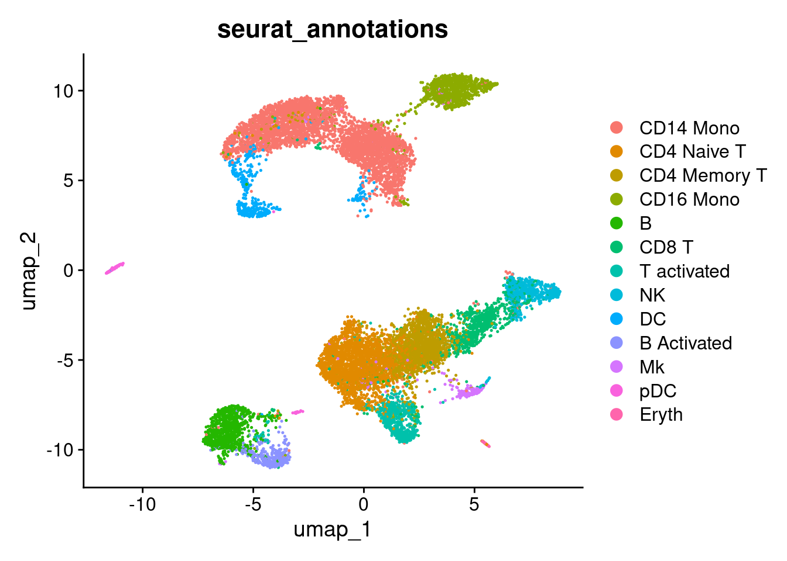
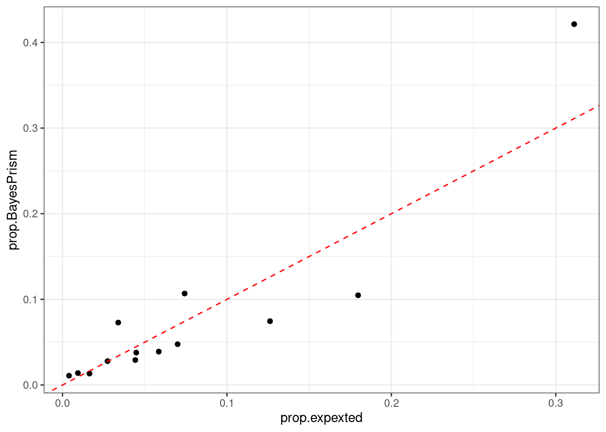

#
library(Seurat)
library(presto)
library(BayesPrism)
library(tidyverse)Test BayesPrism using a sample Seurat Object
AIM
test the tool with a real dataset
Load the libraries
Read in the data
Read in the reference sc dataset
seurat_ref <- readRDS("/mnt/SSD01/training/routines/scRNAseq/R/Seurat/out/object/100_ifnb_DonorStim.rds")
# explore the metadata
seurat_ref@meta.data %>%
head() orig.ident nCount_RNA nFeature_RNA stim seurat_annotations
AAACATACATTTCC.1 IMMUNE_CTRL 3017 877 CTRL CD14 Mono
AAACATACCAGAAA.1 IMMUNE_CTRL 2481 713 CTRL CD14 Mono
AAACATACCTCGCT.1 IMMUNE_CTRL 3420 850 CTRL CD14 Mono
AAACATACCTGGTA.1 IMMUNE_CTRL 3156 1109 CTRL pDC
AAACATACGATGAA.1 IMMUNE_CTRL 1868 634 CTRL CD4 Memory T
AAACATACGGCATT.1 IMMUNE_CTRL 1581 557 CTRL CD14 Mono
donor_id donor_id_fix stim_donor S.Score G2M.Score
AAACATACATTTCC.1 SNG-1016 SNG-1016 CTRL_SNG-1016 0.02868343 0.04229209
AAACATACCAGAAA.1 SNG-1256 SNG-1256 CTRL_SNG-1256 -0.03855494 -0.04514015
AAACATACCTCGCT.1 SNG-1256 SNG-1256 CTRL_SNG-1256 0.03270858 0.01852592
AAACATACCTGGTA.1 SNG-1039 SNG-1039 CTRL_SNG-1039 -0.03587731 0.07473214
AAACATACGATGAA.1 SNG-1488 SNG-1488 CTRL_SNG-1488 0.01051319 0.01570715
AAACATACGGCATT.1 SNG-1015 SNG-1015 CTRL_SNG-1015 0.01854650 -0.03594126
Phase percent.mt percent.ribo percent.globin RNA_snn_res.0.1
AAACATACATTTCC.1 G2M 0 15.180643 0.00000000 1
AAACATACCAGAAA.1 G1 0 4.796453 0.00000000 1
AAACATACCTCGCT.1 S 0 10.000000 0.02923977 1
AAACATACCTGGTA.1 G2M 0 18.377693 0.00000000 7
AAACATACGATGAA.1 G2M 0 32.601713 0.00000000 0
AAACATACGGCATT.1 S 0 10.373182 0.06325111 1
RNA_snn_res.0.2 RNA_snn_res.0.3 RNA_snn_res.0.4
AAACATACATTTCC.1 1 1 1
AAACATACCAGAAA.1 1 1 1
AAACATACCTCGCT.1 1 1 1
AAACATACCTGGTA.1 9 9 10
AAACATACGATGAA.1 0 0 2
AAACATACGGCATT.1 1 1 1
RNA_snn_res.0.5 RNA_snn_res.0.6 RNA_snn_res.0.7
AAACATACATTTCC.1 1 1 0
AAACATACCAGAAA.1 1 1 0
AAACATACCTCGCT.1 1 1 0
AAACATACCTGGTA.1 12 13 13
AAACATACGATGAA.1 3 3 3
AAACATACGGCATT.1 1 1 0
RNA_snn_res.0.8 RNA_snn_res.0.9 RNA_snn_res.1 seurat_clusters
AAACATACATTTCC.1 0 0 0 0
AAACATACCAGAAA.1 0 0 0 0
AAACATACCTCGCT.1 0 0 0 0
AAACATACCTGGTA.1 13 14 14 14
AAACATACGATGAA.1 3 3 3 3
AAACATACGGCATT.1 0 0 0 0# plot the dataset with the relative annotaiton
DimPlot(seurat_ref,group.by = "seurat_annotations")
Read in the sample pBulk generated. This is just one sample generated by summing up all the cells form the reference dataset. I have noticed that to avoid errors I need to have need at least two samples in the bulk dataset. To avoid any issue, and keep the example simple, I have replicated the same sample two time.
# bulk_counts <- readRDS("../out/object/rawCount_pBulk_treat_100_ifnb.rds")
bulk_counts <- readRDS("../../out/object/rawCount_pBulk_all_100_ifnb.rds") %>%
cbind(readRDS("../../out/object/rawCount_pBulk_all_100_ifnb.rds"))
colnames(bulk_counts) <- c("V1","V2")
head(bulk_counts) V1 V2
AL627309.1 4 4
RP11-206L10.2 4 4
LINC00115 62 62
NOC2L 1050 1050
KLHL17 16 16
PLEKHN1 80 80Now produce the expected fraction per cell type for the bulk dataset.
# LUT_prop <- seurat_ref@meta.data %>%
# group_by(seurat_annotations,stim) %>%
# summarise(n = n(),.groups = "drop") %>%
# group_by(stim) %>%
# mutate(tot = sum(n),
# prop = n/tot)
LUT_prop <- seurat_ref@meta.data %>%
group_by(seurat_annotations) %>%
summarise(n = n(),.groups = "drop") %>%
# group_by(stim) %>%
mutate(tot = sum(n),
prop = n/tot)
LUT_prop# A tibble: 13 × 4
seurat_annotations n tot prop
<fct> <int> <int> <dbl>
1 CD14 Mono 4253 13668 0.311
2 CD4 Naive T 2457 13668 0.180
3 CD4 Memory T 1725 13668 0.126
4 CD16 Mono 1015 13668 0.0743
5 B 957 13668 0.0700
6 CD8 T 800 13668 0.0585
7 T activated 613 13668 0.0448
8 NK 605 13668 0.0443
9 DC 463 13668 0.0339
10 B Activated 374 13668 0.0274
11 Mk 224 13668 0.0164
12 pDC 128 13668 0.00936
13 Eryth 54 13668 0.00395Check the dimensions of the data.
dim(seurat_ref)[1] 14053 13668dim(bulk_counts)[1] 14053 2Prepare Data for BayesPrism
BayesPrism requires the data in specific formats. We need to extract the raw counts and cell labels from our Seurat object and ensure the gene names match between our reference and bulk data (same annotation).
# Extract Information from the Seurat Object
# BayesPrism works best with raw counts.
# we can input sparse matrices: https://github.com/Danko-Lab/BayesPrism/issues/58
sc_counts_matrix <- GetAssayData(seurat_ref, slot = "counts")Warning: The `slot` argument of `GetAssayData()` is deprecated as of SeuratObject 5.0.0.
ℹ Please use the `layer` argument instead.# Get cell type labels. These will be our 'cell.type.labels'.
cell_types <- seurat_ref$seurat_annotations
# Get cell state labels. For a simple case, these can be the same as cell types.
# In more complex analyses, these could be cluster IDs or subtypes.
# https://github.com/Danko-Lab/BayesPrism/issues/66
cell_states <- seurat_ref$seurat_annotations
# reshape the data to be accepted by the tool
# generally data are reporeted as feature X sample, but in the tool they are handled as sample X feature.
sc.dat <- t(sc_counts_matrix)
sc.dat[1:5,1:5]5 x 5 sparse Matrix of class "dgCMatrix"
AL627309.1 RP11-206L10.2 LINC00115 NOC2L KLHL17
AAACATACATTTCC.1 . . . . .
AAACATACCAGAAA.1 . . . . .
AAACATACCTCGCT.1 . . . . .
AAACATACCTGGTA.1 . . . . .
AAACATACGATGAA.1 . . . . .dim(sc.dat)[1] 13668 14053class(sc.dat)[1] "dgCMatrix"
attr(,"package")
[1] "Matrix"bk.dat <- t(bulk_counts)
bk.dat[,1:5] AL627309.1 RP11-206L10.2 LINC00115 NOC2L KLHL17
V1 4 4 62 1050 16
V2 4 4 62 1050 16dim(bk.dat)[1] 2 14053class(bk.dat)[1] "matrix" "array" Filter outlier genes from scRNA-seq data
Now it is possible to run the reccommended filtering on the genes. This step can be skipped, but it might affect the final quality of the dataset. We remove the genes from selected groups. Note that when sex is not identical between the reference and mixture, we recommend excluding genes from chrX and chrY. We also remove lowly transcribed genes, as the measurement of transcription of these genes tend to be noise-prone. Removal of these genes can also speed up computation.
#
sc.dat.filtered <- cleanup.genes(input = sc.dat,
input.type = "count.matrix",
species = "hs",
gene.group = c( "Rb","Mrp","other_Rb","chrM","MALAT1","chrX","chrY") ,
exp.cells = 5)Gene symbols detected. Recommend to use EMSEMBLE IDs for more unique mapping.
number of genes filtered in each category:
Rb Mrp other_Rb chrM MALAT1 chrX chrY
85 76 14 0 1 442 12
A total of 604 genes from Rb Mrp other_Rb chrM MALAT1 chrX chrY have been excluded
A total of 598 gene expressed in fewer than 5 cells have been excluded # compare the dimensions before and after filtering
dim(sc.dat.filtered)[1] 13668 12851dim(sc.dat)[1] 13668 14053Next, we check the concordance of gene expression for different types of genes. As bulk and single cell data are usually collected by different experimental protocols, they may have different sensitivity to different types of genes. Note this function only works for human data. For other species, you are advised to make plots by yourself.
plot.bulk.vs.sc(sc.input = sc.dat.filtered,
bulk.input = bk.dat
#pdf.prefix="gbm.bk.vs.sc" specify pdf.prefix if need to output to pdf
)Generally we observe that protein coding genes are the most concordant group between assays. To reduce batch effects and speed up computation, we perform deconvolution on protein coding genes. We have also tried to run BayesPrism on all genes. The results were similar. Subset protein coding genes.
#
sc.dat.filtered.pc <- select.gene.type(sc.dat.filtered,
gene.type = "protein_coding")Gene symbols detected. Recommend to use EMSEMBLE IDs for more unique mapping.
number of genes retained in each category:
protein_coding
11315 # check the dimensions
str(sc.dat.filtered.pc)Formal class 'dgCMatrix' [package "Matrix"] with 6 slots
..@ i : int [1:8081269] 11 29 41 55 74 94 95 99 100 106 ...
..@ p : int [1:11316] 0 953 968 1044 2958 12005 12058 12104 12832 13551 ...
..@ Dim : int [1:2] 13668 11315
..@ Dimnames:List of 2
.. ..$ : chr [1:13668] "AAACATACATTTCC.1" "AAACATACCAGAAA.1" "AAACATACCTCGCT.1" "AAACATACCTGGTA.1" ...
.. ..$ : chr [1:11315] "NOC2L" "KLHL17" "PLEKHN1" "HES4" ...
..@ x : num [1:8081269] 1 1 1 1 2 1 1 1 1 1 ...
..@ factors : list()dim(sc.dat.filtered.pc)[1] 13668 11315dim(sc.dat.filtered)[1] 13668 12851dim(sc.dat)[1] 13668 14053Optionally, at this point, it is possible to run the DE to select markers gene per cell_type. The idea is to further filter the reference dataset to focus only in highly specific genes. In this example I am not running this step.
# set the Idents for the cell types
Idents(seurat_ref) <- "seurat_annotations"
# find the markers genes using the default parameters
diff.exp.stat <- FindAllMarkers(seurat_ref)
str(diff.exp.stat)
# Ideally, we would like to have sufficient number of genes selected for each cell type (>50). If not, users may lower the cutoff. To subset our count matrix over the signature genes we can proceed as follows
marker_genes <- diff.exp.stat %>%
# apply any filter here
# mutate(delta.pct = pct.1 - pct.2) %>%
# filter(avg_log2FC > 0.1,p_val_adj < 0.01,abs(delta.pct)>0.1) %>%
pull(gene) %>%
unique()
# match the marker genes with the available genes
filter_genes <- intersect(marker_genes,colnames(sc.dat.filtered.pc))
# how many genes are retained
length(filter_genes)
# filter the matrix
sc.dat.filtered.pc.sig <- sc.dat.filtered.pc[,filter_genes]
dim(sc.dat.filtered.pc.sig)
sc.dat.filtered.pc.sig[1:10,1:10]Run BayesPrism Deconvolution
With the data properly formatted and aligned, we can now run the deconvolution. Construct the BayesPrism Object by combineing the reference and cell labels into a ‘prism’ object. BayesPrism works for both tumor and non-tumor datasets. Many of the benchmarks in the manuscript were done on non-tumor datasets, such PBMC and brain cells. Simply set key=NULL when constructing the prism object.
my_prism <- new.prism(
reference = sc.dat.filtered.pc,
mixture = bk.dat,
# No specific tumor/normal key needed for this example: https://github.com/Danko-Lab/BayesPrism/issues/76
key = NULL,
cell.type.labels = cell_types,
cell.state.labels = cell_states,
input.type = "count.matrix"
)number of cells in each cell state
cell.state.labels
Eryth pDC Mk B Activated DC NK
54 128 224 374 463 605
T activated CD8 T B CD16 Mono CD4 Memory T CD4 Naive T
613 800 957 1015 1725 2457
CD14 Mono
4253
No tumor reference is speficied. Reference cell types are treated equally.
Number of outlier genes filtered from mixture = 6
Aligning reference and mixture...
Normalizing reference... Run the Deconvolution Algorithm. This is the core computational step. We’ll use 20 cores for this example. Adjust n.cores as needed.
# for quarto file, skip the processing and load the result
bp_results <- run.prism(prism = my_prism, n.cores = 20)You can look at the returned object to see what it contains
bp_resultsInput prism info:
Cell states in each cell type:
$`CD14 Mono`
[1] "CD14 Mono"
$pDC
[1] "pDC"
$`CD4 Memory T`
[1] "CD4 Memory T"
$`T activated`
[1] "T activated"
$`CD4 Naive T`
[1] "CD4 Naive T"
$`CD8 T`
[1] "CD8 T"
$Mk
[1] "Mk"
$`B Activated`
[1] "B Activated"
$B
[1] "B"
$DC
[1] "DC"
$NK
[1] "NK"
$`CD16 Mono`
[1] "CD16 Mono"
$Eryth
[1] "Eryth"
Identifier of the malignant cell type: NA
Number of cell states: 13
Number of cell types: 13
Number of mixtures: 2
Number of genes: 11311
Initial cell type fractions:
CD14 Mono pDC CD4 Memory T T activated CD4 Naive T CD8 T Mk
Min. 0.421 0.014 0.075 0.038 0.105 0.039 0.013
1st Qu. 0.421 0.014 0.075 0.038 0.105 0.039 0.013
Median 0.421 0.014 0.075 0.038 0.105 0.039 0.013
Mean 0.421 0.014 0.075 0.038 0.105 0.039 0.013
3rd Qu. 0.421 0.014 0.075 0.038 0.105 0.039 0.013
Max. 0.421 0.014 0.075 0.038 0.105 0.039 0.013
B Activated B DC NK CD16 Mono Eryth
Min. 0.028 0.048 0.073 0.029 0.107 0.011
1st Qu. 0.028 0.048 0.073 0.029 0.107 0.011
Median 0.028 0.048 0.073 0.029 0.107 0.011
Mean 0.028 0.048 0.073 0.029 0.107 0.011
3rd Qu. 0.028 0.048 0.073 0.029 0.107 0.011
Max. 0.028 0.048 0.073 0.029 0.107 0.011
Updated cell type fractions:
CD14 Mono pDC CD4 Memory T T activated CD4 Naive T CD8 T Mk
Min. 0.421 0.014 0.075 0.038 0.105 0.039 0.013
1st Qu. 0.421 0.014 0.075 0.038 0.105 0.039 0.013
Median 0.421 0.014 0.075 0.038 0.105 0.039 0.013
Mean 0.421 0.014 0.075 0.038 0.105 0.039 0.013
3rd Qu. 0.421 0.014 0.075 0.038 0.105 0.039 0.013
Max. 0.421 0.014 0.075 0.038 0.105 0.039 0.013
B Activated B DC NK CD16 Mono Eryth
Min. 0.028 0.048 0.073 0.029 0.107 0.011
1st Qu. 0.028 0.048 0.073 0.029 0.107 0.011
Median 0.028 0.048 0.073 0.029 0.107 0.011
Mean 0.028 0.048 0.073 0.029 0.107 0.011
3rd Qu. 0.028 0.048 0.073 0.029 0.107 0.011
Max. 0.028 0.048 0.073 0.029 0.107 0.011# saveRDS(bp_results,"../out/object/bp_results_rawCount_pBulk_treat_100_ifnb.rds")
# saveRDS(bp_results,"../../out/object/bp_results_rawCount_pBulk_all_100_ifnb.rds")Extract and Calculate Deconvoluted Reads and fractions
Deconvoluted reads can be extracted as follow. Notice that they are not integer, but according to the authors, it is possible to round them to integers (https://github.com/Danko-Lab/BayesPrism/issues/121).
# x <- "Endothelial"
# deconvoluted estimates
list_bulk <- lapply(unique(cell_types), function(x){
mat <- get.exp(bp=bp_results,
state.or.type="type",
cell.name=x)
data <- mat %>%
t()
return(data)
}) %>%
setNames(unique(cell_types))
str(list_bulk)List of 13
$ CD14 Mono : num [1:11311, 1:2] 117.4 6 47.7 2522.9 27.8 ...
..- attr(*, "dimnames")=List of 2
.. ..$ : chr [1:11311] "NOC2L" "KLHL17" "PLEKHN1" "HES4" ...
.. ..$ : chr [1:2] "V1" "V2"
$ pDC : num [1:11311, 1:2] 62.79 3.04 4.92 811.56 0.02 ...
..- attr(*, "dimnames")=List of 2
.. ..$ : chr [1:11311] "NOC2L" "KLHL17" "PLEKHN1" "HES4" ...
.. ..$ : chr [1:2] "V1" "V2"
$ CD4 Memory T: num [1:11311, 1:2] 125.1 0 7.24 55.908 0.964 ...
..- attr(*, "dimnames")=List of 2
.. ..$ : chr [1:11311] "NOC2L" "KLHL17" "PLEKHN1" "HES4" ...
.. ..$ : chr [1:2] "V1" "V2"
$ T activated : num [1:11311, 1:2] 22.236 0.004 0.012 17.08 1.08 ...
..- attr(*, "dimnames")=List of 2
.. ..$ : chr [1:11311] "NOC2L" "KLHL17" "PLEKHN1" "HES4" ...
.. ..$ : chr [1:2] "V1" "V2"
$ CD4 Naive T : num [1:11311, 1:2] 17.22 0.004 0 14.46 0.884 ...
..- attr(*, "dimnames")=List of 2
.. ..$ : chr [1:11311] "NOC2L" "KLHL17" "PLEKHN1" "HES4" ...
.. ..$ : chr [1:2] "V1" "V2"
$ CD8 T : num [1:11311, 1:2] 59.3 1.05 3.12 25.83 0.92 ...
..- attr(*, "dimnames")=List of 2
.. ..$ : chr [1:11311] "NOC2L" "KLHL17" "PLEKHN1" "HES4" ...
.. ..$ : chr [1:2] "V1" "V2"
$ Mk : num [1:11311, 1:2] 34.388 1.876 3.024 40.148 0.968 ...
..- attr(*, "dimnames")=List of 2
.. ..$ : chr [1:11311] "NOC2L" "KLHL17" "PLEKHN1" "HES4" ...
.. ..$ : chr [1:2] "V1" "V2"
$ B Activated : num [1:11311, 1:2] 44.764 0.012 9.876 592.648 14.348 ...
..- attr(*, "dimnames")=List of 2
.. ..$ : chr [1:11311] "NOC2L" "KLHL17" "PLEKHN1" "HES4" ...
.. ..$ : chr [1:2] "V1" "V2"
$ B : num [1:11311, 1:2] 285.53 2.07 2.14 28.55 3.13 ...
..- attr(*, "dimnames")=List of 2
.. ..$ : chr [1:11311] "NOC2L" "KLHL17" "PLEKHN1" "HES4" ...
.. ..$ : chr [1:2] "V1" "V2"
$ DC : num [1:11311, 1:2] 88.78 1.93 1.96 30.55 1.01 ...
..- attr(*, "dimnames")=List of 2
.. ..$ : chr [1:11311] "NOC2L" "KLHL17" "PLEKHN1" "HES4" ...
.. ..$ : chr [1:2] "V1" "V2"
$ NK : num [1:11311, 1:2] 112.7 0.004 0.004 58.424 0.912 ...
..- attr(*, "dimnames")=List of 2
.. ..$ : chr [1:11311] "NOC2L" "KLHL17" "PLEKHN1" "HES4" ...
.. ..$ : chr [1:2] "V1" "V2"
$ CD16 Mono : num [1:11311, 1:2] 78.792 0.008 0.012 106.432 0.972 ...
..- attr(*, "dimnames")=List of 2
.. ..$ : chr [1:11311] "NOC2L" "KLHL17" "PLEKHN1" "HES4" ...
.. ..$ : chr [1:2] "V1" "V2"
$ Eryth : num [1:11311, 1:2] 0.944 0 0 17.464 0 ...
..- attr(*, "dimnames")=List of 2
.. ..$ : chr [1:11311] "NOC2L" "KLHL17" "PLEKHN1" "HES4" ...
.. ..$ : chr [1:2] "V1" "V2"# generate integer estimates
list_bulk_integer <- lapply(unique(cell_types), function(x){
mat <- get.exp(bp=bp_results,
state.or.type="type",
cell.name=x)
# generate integer level estimates
# https://github.com/Danko-Lab/BayesPrism/issues/121
# round up the Z matrix to the nearest integer and use it as input for DESeq2 (without any normalization step).
data <- mat %>%
t() %>%
round()
return(data)
}) %>%
setNames(unique(cell_types))
str(list_bulk_integer)List of 13
$ CD14 Mono : num [1:11311, 1:2] 117 6 48 2523 28 ...
..- attr(*, "dimnames")=List of 2
.. ..$ : chr [1:11311] "NOC2L" "KLHL17" "PLEKHN1" "HES4" ...
.. ..$ : chr [1:2] "V1" "V2"
$ pDC : num [1:11311, 1:2] 63 3 5 812 0 3 10 16 98 4 ...
..- attr(*, "dimnames")=List of 2
.. ..$ : chr [1:11311] "NOC2L" "KLHL17" "PLEKHN1" "HES4" ...
.. ..$ : chr [1:2] "V1" "V2"
$ CD4 Memory T: num [1:11311, 1:2] 125 0 7 56 1 6 222 547 180 14 ...
..- attr(*, "dimnames")=List of 2
.. ..$ : chr [1:11311] "NOC2L" "KLHL17" "PLEKHN1" "HES4" ...
.. ..$ : chr [1:2] "V1" "V2"
$ T activated : num [1:11311, 1:2] 22 0 0 17 1 2 10 13 18 4 ...
..- attr(*, "dimnames")=List of 2
.. ..$ : chr [1:11311] "NOC2L" "KLHL17" "PLEKHN1" "HES4" ...
.. ..$ : chr [1:2] "V1" "V2"
$ CD4 Naive T : num [1:11311, 1:2] 17 0 0 14 1 2 7 216 50 0 ...
..- attr(*, "dimnames")=List of 2
.. ..$ : chr [1:11311] "NOC2L" "KLHL17" "PLEKHN1" "HES4" ...
.. ..$ : chr [1:2] "V1" "V2"
$ CD8 T : num [1:11311, 1:2] 59 1 3 26 1 3 36 25 90 10 ...
..- attr(*, "dimnames")=List of 2
.. ..$ : chr [1:11311] "NOC2L" "KLHL17" "PLEKHN1" "HES4" ...
.. ..$ : chr [1:2] "V1" "V2"
$ Mk : num [1:11311, 1:2] 34 2 3 40 1 3 402 83 73 6 ...
..- attr(*, "dimnames")=List of 2
.. ..$ : chr [1:11311] "NOC2L" "KLHL17" "PLEKHN1" "HES4" ...
.. ..$ : chr [1:2] "V1" "V2"
$ B Activated : num [1:11311, 1:2] 45 0 10 593 14 2 47 143 127 13 ...
..- attr(*, "dimnames")=List of 2
.. ..$ : chr [1:11311] "NOC2L" "KLHL17" "PLEKHN1" "HES4" ...
.. ..$ : chr [1:2] "V1" "V2"
$ B : num [1:11311, 1:2] 286 2 2 29 3 11 16 28 145 31 ...
..- attr(*, "dimnames")=List of 2
.. ..$ : chr [1:11311] "NOC2L" "KLHL17" "PLEKHN1" "HES4" ...
.. ..$ : chr [1:2] "V1" "V2"
$ DC : num [1:11311, 1:2] 89 2 2 31 1 2 54 6 72 11 ...
..- attr(*, "dimnames")=List of 2
.. ..$ : chr [1:11311] "NOC2L" "KLHL17" "PLEKHN1" "HES4" ...
.. ..$ : chr [1:2] "V1" "V2"
$ NK : num [1:11311, 1:2] 113 0 0 58 1 3 166 35 50 17 ...
..- attr(*, "dimnames")=List of 2
.. ..$ : chr [1:11311] "NOC2L" "KLHL17" "PLEKHN1" "HES4" ...
.. ..$ : chr [1:2] "V1" "V2"
$ CD16 Mono : num [1:11311, 1:2] 79 0 0 106 1 6 39 87 77 11 ...
..- attr(*, "dimnames")=List of 2
.. ..$ : chr [1:11311] "NOC2L" "KLHL17" "PLEKHN1" "HES4" ...
.. ..$ : chr [1:2] "V1" "V2"
$ Eryth : num [1:11311, 1:2] 1 0 0 17 0 0 0 3 5 0 ...
..- attr(*, "dimnames")=List of 2
.. ..$ : chr [1:11311] "NOC2L" "KLHL17" "PLEKHN1" "HES4" ...
.. ..$ : chr [1:2] "V1" "V2"Notice that the number of genes matches is smaller than the input.
lapply(list_bulk, function(x){
dim(x)
})$`CD14 Mono`
[1] 11311 2
$pDC
[1] 11311 2
$`CD4 Memory T`
[1] 11311 2
$`T activated`
[1] 11311 2
$`CD4 Naive T`
[1] 11311 2
$`CD8 T`
[1] 11311 2
$Mk
[1] 11311 2
$`B Activated`
[1] 11311 2
$B
[1] 11311 2
$DC
[1] 11311 2
$NK
[1] 11311 2
$`CD16 Mono`
[1] 11311 2
$Eryth
[1] 11311 2dim(sc.dat.filtered.pc)[1] 13668 11315Get the fraction estimated
theta <- get.fraction(bp=bp_results,
which.theta="final",
state.or.type="type")
theta CD14 Mono pDC CD4 Memory T T activated CD4 Naive T CD8 T
V1 0.4213685 0.01397205 0.07452289 0.03783979 0.1047991 0.03895444
V2 0.4213685 0.01397205 0.07452289 0.03783979 0.1047991 0.03895444
Mk B Activated B DC NK CD16 Mono Eryth
V1 0.01330752 0.02786863 0.04761429 0.07288464 0.02917064 0.1068366 0.01086084
V2 0.01330752 0.02786863 0.04761429 0.07288464 0.02917064 0.1068366 0.01086084Test
Compare the expected prop vs the actual ones
# df_cor <- full_join(
# LUT_prop,
# theta %>%
# as.data.frame() %>%
# rownames_to_column("sample_id") %>%
# pivot_longer(names_to = "cell_type",values_to = "prop",-sample_id),
# by = c("stim" = "sample_id","seurat_annotations"="cell_type"),suffix = c(".expexted",".BayesPrism"))
df_cor <- full_join(
LUT_prop,
theta %>%
as.data.frame() %>%
rownames_to_column("sample_id") %>%
pivot_longer(names_to = "cell_type",values_to = "prop",-sample_id),
by = c("seurat_annotations"="cell_type"),suffix = c(".expexted",".BayesPrism"))
df_cor %>%
ggplot(aes(x=prop.expexted,y=prop.BayesPrism)) +
geom_point() +
geom_abline(intercept = 0,slope = 1,col="red",linetype = "dashed") +
theme_bw() +
# facet_wrap(~seurat_annotations)+
theme(strip.background = element_blank())
Confirm that the sum of the deconvoluted pBulk per sample correponds to the actual input values
# sum all the deconvoluted matrices obtained
bulk_convoluted <- purrr::reduce(list_bulk,`+`)
str(bulk_convoluted) num [1:11311, 1:2] 1050 16 80 4322 53 ...
- attr(*, "dimnames")=List of 2
..$ : chr [1:11311] "NOC2L" "KLHL17" "PLEKHN1" "HES4" ...
..$ : chr [1:2] "V1" "V2"# the two matrices are not the same as the convoluted version is missing the genes that have been filtered out
dim(bulk_counts)[1] 14053 2dim(bulk_convoluted)[1] 11311 2# match the gene id in both objects before making the comparison
gene_id <- rownames(bulk_convoluted)
str(bulk_convoluted) num [1:11311, 1:2] 1050 16 80 4322 53 ...
- attr(*, "dimnames")=List of 2
..$ : chr [1:11311] "NOC2L" "KLHL17" "PLEKHN1" "HES4" ...
..$ : chr [1:2] "V1" "V2"str(bulk_counts[gene_id,] %>% as.matrix()) num [1:11311, 1:2] 1050 16 80 4322 53 ...
- attr(*, "dimnames")=List of 2
..$ : chr [1:11311] "NOC2L" "KLHL17" "PLEKHN1" "HES4" ...
..$ : chr [1:2] "V1" "V2"# they are the same
all.equal(bulk_convoluted,bulk_counts[gene_id,] %>% as.matrix())[1] TRUE